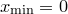

Text labels may be added to multiplot canvases using the text command. This has the following syntax:
text 'This is some text' at x,y
In this case, the string ‘This is some text’ would be rendered at position  on the multiplot. As with the set label command, a colour may optionally be specified with the with colour modifier, as well as a rotation angle to rotate text labels through any given angle, measured in degrees counter-clockwise. For example:
text 'This is some text' at x,y rotate r with colour red
The commands set textcolour, set texthalign and set textvalign can be used to set the colour and alignment of the text produced with the text command. Alternatively, the text command takes three modifiers to control the alignment of the text which override these set commands. The halign and valign modifiers may be followed by any of the settings which may follow the set texthalign and set textvalign commands respectively, as in the following examples:
text 'This is some text' at 0,0 halign left valign top text 'This is some text' at 0,0 halign right valign centre
The gap modifier allows a gap to be inserted in the alignment of the text. For example, the string halign left gap 3*unit(mm) would cause text to be rendered with its left side  to the right of the position specified for the text. This is useful for labelling points on diagrams, where the labels should be slightly offset from the points that they are associated with. If the gap modifier is followed by a dimensionless number, rather than one with dimensions of lengths, then it is assumed to be measured in centimetres.
to the right of the position specified for the text. This is useful for labelling points on diagrams, where the labels should be slightly offset from the points that they are associated with. If the gap modifier is followed by a dimensionless number, rather than one with dimensions of lengths, then it is assumed to be measured in centimetres.
It should be noted that the text command can also be used outside of the multiplot environment, to render a single piece of short text instead of a graph. One obvious application is to produce equations rendered as graphical files which can subsequently be imported into documents, slideshows or webpages.